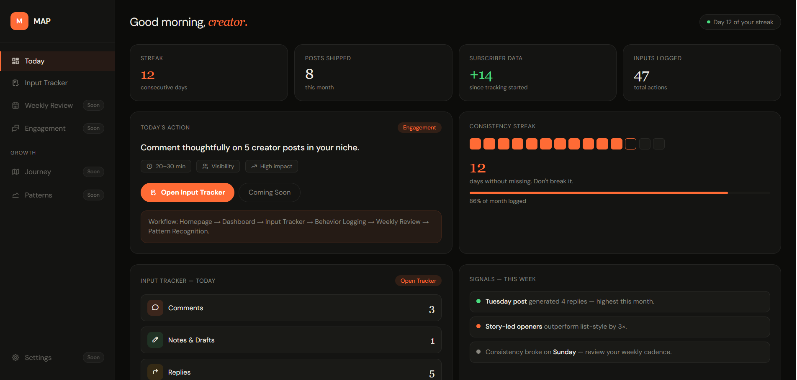

MAP helps creators stop disappearing between posts, reduce decision fatigue, and finally see what actions actually create momentum.

No giant dashboards. No productivity chaos. Just a calmer system for creators tired of disappearing between posts.
Get your personalized creator workspace.
Know exactly what matters daily.
Focus on actions instead of anxiety.
See what actually creates momentum.
You sit down to write and spend more time deciding than publishing.
You post consistently for a while but cannot tell what’s actually working.
You disappear for days, lose momentum, then begin from zero again.
You check subscriber counts daily and slowly disconnect from the process itself.